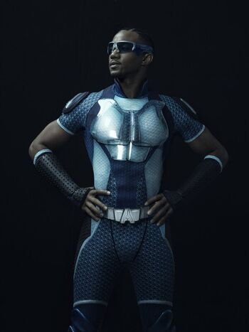
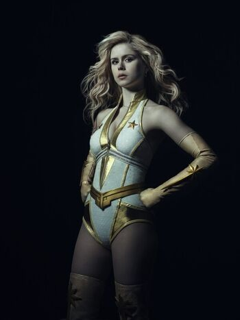

The leader of The Seven, Homelander - played by Anthony Starr - is the show's equivalent to Superman - but with deadlier tendencies. As well as being super strong, Homelander has x-ray and laser vision, the ability to fly and super hearing, making him nearly invincible.
Queen Maeve/Maggie Shaw is -unofficially - second-in-command to Homelander in The Seven and is played by Dominique McElligott. Similar to Wonder Woman, Queen Maeve's powers include super strength, agility and durability, and while she cannot fly, she can leap extremely high.
The Deep is played by former Gossip Girl star Chase Crawford and is The Boys' version of Aquaman. The Deep can communicate with sea creatures, and they will follow his command. He can breathe under water thanks to gills on his torso.
is the fastest man on the planet. As well as his superhuman speed - he can run faster than 1000 miles per hour - A-Train also has enhanced durability and strength. However, he takes extra doses of Compound V to help him retain his title as the fastest man on Earth.
The most mysterious member of The Seven is definitely Black Noir. While he doesn't speak, and no one knows his real name or identity, Black Noir is a skilled martial artist. These skills are enhanced by superhuman strength, agility and, you guessed it, durability.
Starlight - or Annie January - was the newest recruit to The Seven in season one after being selected during a nationwide search. However, she quickly found the superhero gang wasn't all it seemed.Starlight (Erin Moriarty) can draw power from nearby electricity, blasting it from her eyes and hands, while she is also super strong.
Aya Cash joined the show for season two as Stormfront, and immediately challenges Homelander's authority in The Seven. Stormfront can manipulate electricity and shoot bolts from her hands, she can also levitate. She is actually older than 100, she was a Nazi